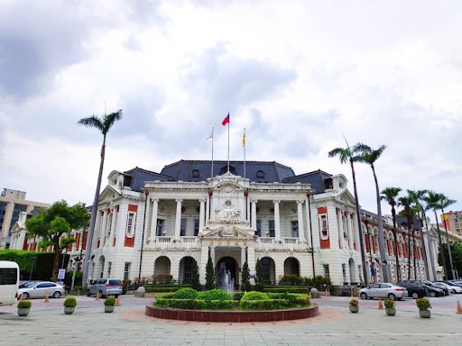

國定古蹟 ‧ 西區
1. 臺中州廳
由總督府營繕課建築師森山松之助設計，結合仿巴洛克與後期文藝復興式風格，立面採用典雅柱式、紅白相間橫帶與馬薩式屋頂，見證臺中市街百年風華。
點擊展開詳細資訊與交通指引 ▸
歷史背景：始建於 1913 年，日治時期作為臺中州的行政核心，戰後則長期做為臺中市政府辦公廳舍。歷經數年修復工程後，重現百年前古典官署的宏偉氣度。
特色看點：對稱的轉角主入口、典雅的圓柱長廊、以及修復後重現的木結構中庭庭園。
大眾運輸：臺中火車站沿中山路步行約 10 分鐘，或搭乘市區公車至「臺中州廳」站下車即達。